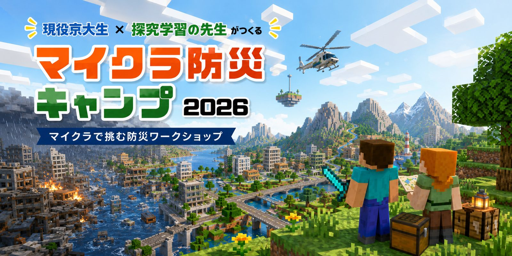

Workshop — 探究ワークショップ
マイクラ防災キャンプ2026
2026.08.08 (土) ｜ 京都経済センター KOIN
「マイクラ × 探究学習」防災から学ぶアントレプレナーシップ・ワークショップを、京大マインクラフト同好会（KUMC）との共同主催で開催。小学4年生〜中学3年生の子どもたちが、Minecraft の課題ワールドで身近な災害リスクを見つけ、対策を形にして発表しました。2部制・各150分、参加無料。京都市教育委員会 後援／一般社団法人京都知恵産業創造の森 協力。